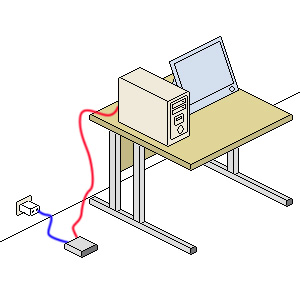
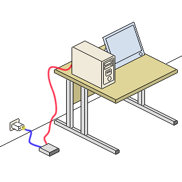
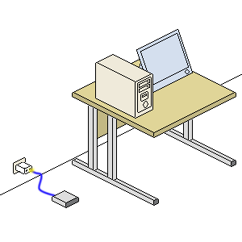

Free
computer Tutorials
|
Free
computer Tutorials
|
|
 home home |
Stay at Home and Learn | |||||
Beginners Guide to going Wireless |
||||||
|
The Basics of Going Wireless
In this guide, we'll discuss the basics of connecting your computer
to the internet wirelessly. It's easier to grasp what's happening if
we concentrate on connecting just one computer. We'll then move on to
adding more PCs. (It is assumed that you have a Broadband connection,
and not a slower Dialup connection plugged straight in to your phone
line.)
An ADSL Broadband Setup - Without WirelessIn the image below, you'll see a typical scenario of one PC connected to the phone line via a ADSL modem. (ADSL broadband is the one that goes down your BT phone line, if you're in the UK. If you have cable broadband then it won't.)  The image shows a red wire and a blue wire. The red wire goes from the PC to the modem. The blue wire goes from the modem to the phone line. Because it's ADSL, the blue wire first plugs into something called a Filter. The Filter then goes into the phone socket.) If you request a web page from your computer, the signal goes down
the red wire to the modem. It then travels through the blue wire, and
down your phone line. The image below shows this (the yellow signal): When the web page is found on the internet, it is sent down the blue wire, through the modem, then the red wire, and to your PC. Here's a new image:  To go wireless, the bit you get rid of is the ADSL modem (the one on the floor in the image, with the red and blue wires plugged in to it). You'll swap this with something called a Wireless Router. This can have the ADSL modem built in.
An ADSL Broadband Setup - WirelessIn the next image, the red wire is gone. It's wireless! You are requesting
a web page from the internet. Notice the yellow signal. Now it doesn't
need to travel down the red wire. (It still needs to travel through
the blue wire, though.) It travels through the air to the modem (now
a ADSL wireless router), and then down the blue wire: When the web page is found on the internet, the signal travels through the blue wire, and then to the modem (or ADSL wireless router, as we're now calling it). After the modem, the signal travels through the air to your PC.  The great thing about wireless is that the PC doesn't need to be as close to the wireless router as it is in the image above. It can be right across the room, in another room entirely or, if you're really lucky, at the bottom of the garden! There is something else you do need, however, as well as the wireless router - a wireless adaptor. We'll see what these are in the next part.
<--Back to the Beginner's Computing Contents Page View all our Home Study Computer Courses
|